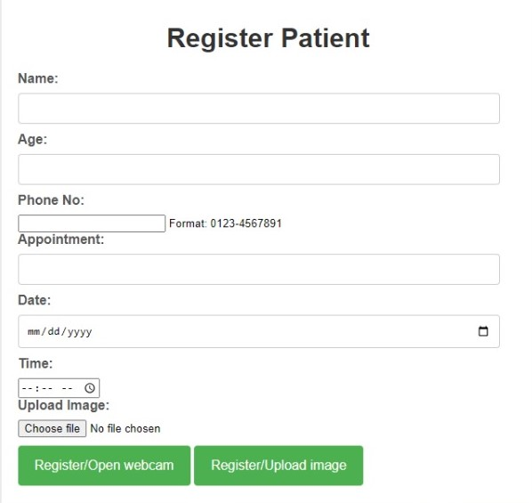
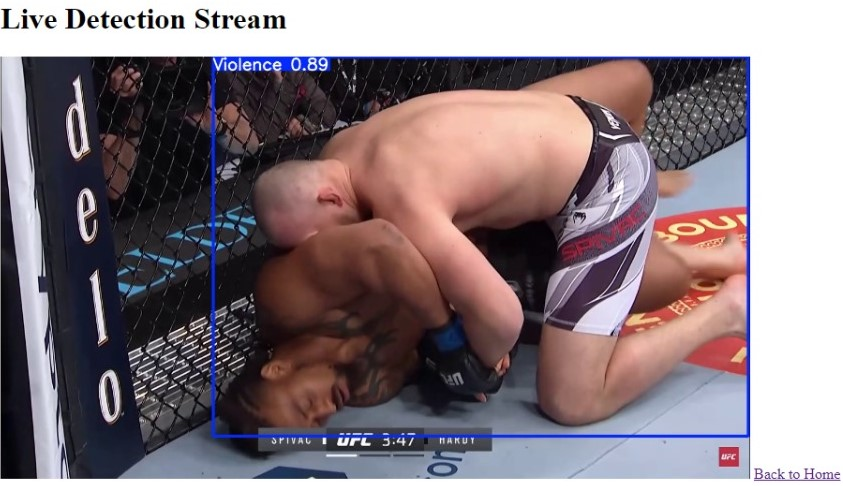
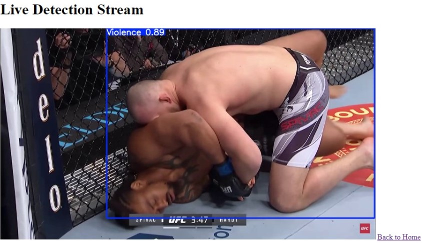
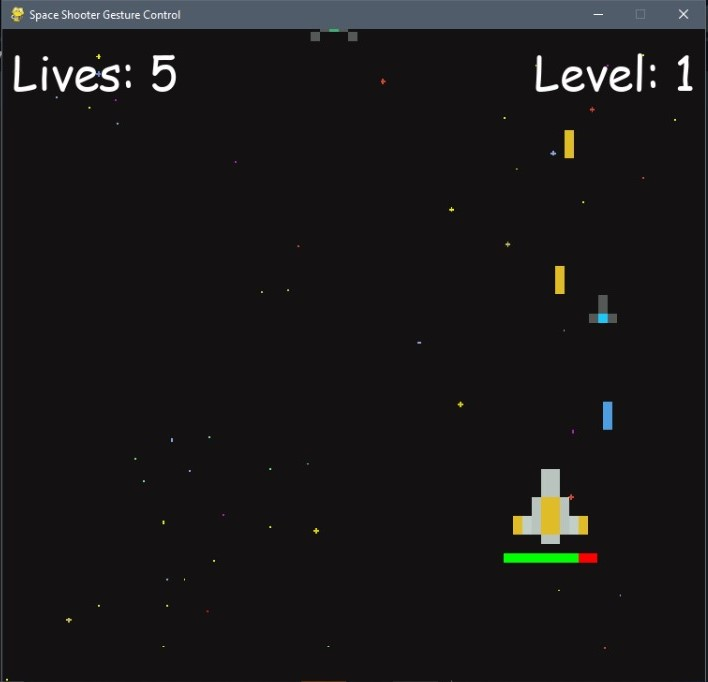
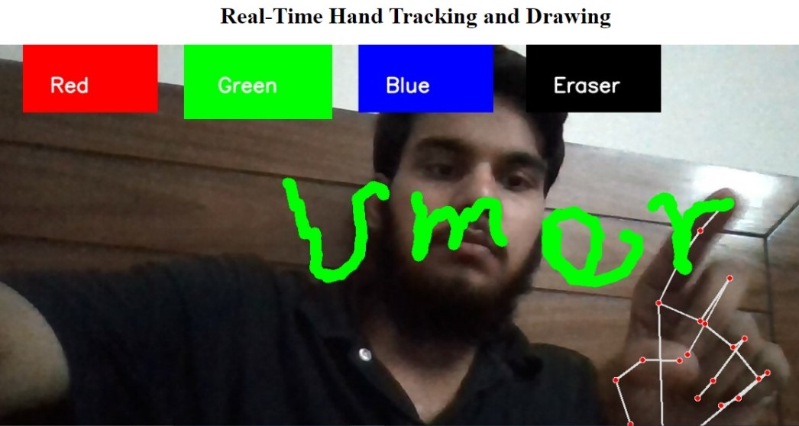
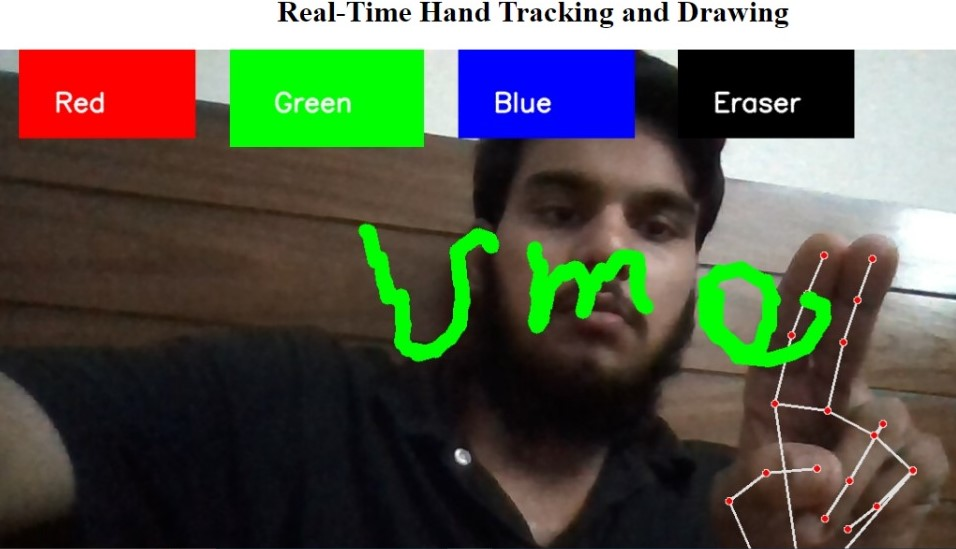
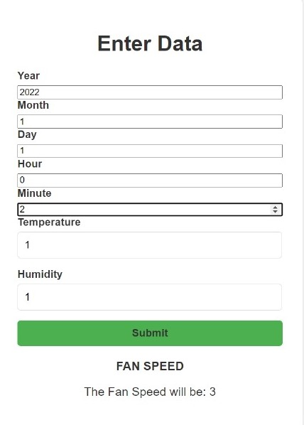

Intro

AI/ML ENGINEER
As an AI Engineer with a passion for pushing the boundaries of technology, I specialize in developing and deploying advanced machine learning models and AI systems that drive meaningful impact. My expertise spans across computer vision, natural language processing, and deep learning, where I’ve successfully built and integrated AI-driven solutions for a variety of applications, including violence detection, facial recognition, and predictive analytics..
With a solid foundation in both theoretical knowledge and practical experience, I have a proven track record of solving complex problems through innovative AI technologies. My work is characterized by a commitment to continuous learning, a deep understanding of data, and a focus on creating scalable, efficient solutions that meet real-world challenges.
I thrive in collaborative environments where I can contribute my skills to multidisciplinary teams, bringing ideas to life from concept to deployment. My goal is to harness the power of AI to create smarter, more efficient systems that make a difference in people’s lives.
Resume
Projects
Patient Face Recognition System
Deep Learning || Computer Vision || Face Recognition || Flask || SQL
Patients register by submitting a form and face image. DeepFace (VGG-Face) creates face embeddings, stored with patient info in SQLite. For detection, live video embeddings are matched with stored ones, displaying details if matched. Flask handles the web interface and database operations.

View on GitHub
Violence Detector
Deep Learning || Computer Vision || Object Detection || YOLOv8 || Flask
This project is a Flask-based web application for real-time violence detection in uploaded video files. It utilizes a retrained YOLOv8 model to detect violent activities and annotate video frames. Users can upload videos through a web interface, which are then processed and streamed with violence detection alerts. The application supports real-time processing, displaying annotated video frames.
 

View on GitHub
AI Space Invaders
Deep Learning || Computer Vision || Python Programming || Pygame || Django
In this project, I automated a game I developed during my second semester by fine-tuning a pretrained CNN model to detect hand gestures, enabling gesture-based control for gameplay.

View on GitHub
AI Virtual Painter
Computer Vision || Object Detection || Mediapipe || Django
An interactive application using Mediapipe for hand tracking and OpenCV for image processing, allowing users to paint on a virtual canvas with hand gestures. Features include drawing, erasing, and color changing. Built with Django for the backend.


View on GitHub
BLDC Fan Data Analysis
Exploratory Data Analysis || Machine Learning || Flask
This project demonstrates the analysis of BLDC (Brushless Direct Current) fan data using an Artificial Neural Network (ANN) model to predict the speed of the fan based on various environmental factors. The project is deployed on Flask and includes a trained ANN that is used to make predictions on real-time data.

View on GitHub
Space Shooter Game
Python Programming || Pygame
I created this game using Pygame, incorporating keyboard input for actions like moving up, down, left, right, and shooting.
View on GitHub
Home Automations and IoT (Arduino)
Arduino || IoT
I have made home automation projects like automatic generator and main supply controller, water motor automator, and app-controlled appliances.
Contact
Email: um3rsiddiqui99@gmail.com
Contact Number: 0341-8094081